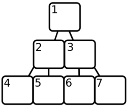

W rozdziale 7 struktura danych o nazwie kopiec binarny została użyta do przechowywania zbioru obiektów w taki sposób, aby można było szybko znaleźć najmniejszy element tego zbioru. Zgodnie z obietnicą w tym dodatku szczegółowo objaśniam zasadę działania tej struktury danych.
Przypomnę problem, który mieliśmy do rozwiązania. Algorytm A* tworzył duże ilości małych obiektów i zapisywał je na „liście otwartej”. Ciągle usuwał najmniejsze elementy z tej listy. Najprostszym rozwiązaniem byłoby zapisanie wszystkich obiektów w tablicy i szukanie najmniejszego, gdyby był potrzebny. Jeśli jednak nie mamy bardzo dużo czasu, ta metoda się nie nada. Aby znaleźć najmniejszy element w nieposortowanej tablicy, trzeba przejrzeć całą tę tablicę i sprawdzić każdy element z osobna.
Innym rozwiązaniem mogłoby być posortowanie tablicy. Tablice w języku JavaScript mają wspaniałą metodę o nazwie sort, za pomocą której łatwo się je sortuje. Niestety sortowanie tablicy za każdym razem, gdy dodawany jest do niej element jest bardziej wymagające niż szukanie najmniejszego elementu w nieposortowanej tablicy. Można oczywiście stosować różne sztuczki, jak choćby nie sortowanie całej tablicy tylko wstawianie nowych wartości od razu w odpowiednim miejscu. To jest już bliższe sposobowi działania kopca binarnego, ale wstawienie wartości w środku tablicy wymaga przesunięcia wszystkich elementów, które znajdują się za miejscem wstawienia, co wymaga zbyt dużo pracy.
Innym sposobem jest rezygnacja z użycia tablicy i zapisywanie wartości w zbiorze niepołączonych ze sobą obiektów. Prostą realizacją tego pomysłu jest zapisanie w każdym obiekcie jednej wartości i dwóch (lub mniej) łączy do innych obiektów. Jest jeden obiekt główny, w którym zapisana jest najmniejsza wartość dająca dostęp do wszystkich innych obiektów. Łącza zawsze wskazują obiekty zawierające większe wartości, dzięki czemu cała struktura wygląda tak:
Struktury tego rodzaju nazywa się drzewami ze względu na to, jak się rozgałęziają. Teraz gdy potrzebny jest najmniejszy element, wystarczy pobrać pierwszy element i przeorganizować strukturę tak, aby jeden z potomków tego elementu — o najmniejszej wartości — stał się pierwszy. Wstawiając nowe elementy, „przechodzi się” w dół drzewa, aż znajdzie się element mniejszy od nowego i wstawia się go tam. To wymaga o wiele mniej szukania niż w posortowanej tabeli, ale wadą tego rozwiązania jest utworzenie dużej liczby obiektów, co również ujemnie wpływa na wydajność.
W kopcu binarnym wykorzystuje się posortowaną tablicę, ale jest ona tylko częściowo posortowana, podobnie jak w powyższym drzewie. Zamiast z obiektów, drzewo jest zbudowane z pozycji w tablicy, co usiłowałem pokazać na poniższym rysunku:

Element tablicy 1 jest korzeniem drzewa, elementy 2 i 3 są jego dziećmi i ogólnie rzecz biorąc element X ma dzieci X * 2 oraz X * 2 + 1. Rozumiesz teraz, dlaczego strukturę tę nazwano kopcem? Zwróć uwagę, że indeksowanie w tej tablicy rozpoczyna się od 1, podczas gdy w języku JavaScript indeksy tablicy zaczynają się od 0. W kopcu najmniejszy element zawsze znajduje się na pozycji 1, a da każdego elementu w tablicy na pozycji X, element na pozycji X / 2 (zaokrąglamy w dół) jest mniejszy.
Zatem znalezienie najmniejszego elementu wymaga tylko pobrania elementu znajdującego się na pozycji 1. Kiedy jednak element ten zostanie pobrany, kopiec musi pozbyć się wszelkich dziur powstałych w tablicy. W tym celu pobiera ostatni element tablicy i przenosi go na początek, a następnie porównuje go z elementami potomnymi na pozycjach 2 i 3. Jest spore prawdopodobieństwo, że będzie większy, a więc zostanie zamieniony miejscami z jednym z nich i proces porównywania z dziećmi jest powtarzany dla nowej pozycji i tak w kółko, aż element trafi na pozycję, na której jego dzieci będą od niego większe lub nie będzie miał dzieci.
[2, 3, 5, 4, 8, 7, 6]
Zabierz 2, przenieś 6 na początek.
[6, 3, 5, 4, 8, 7]
6 jest większe od pierwszego dziecka 3, a więc następuje zamiana.
[3, 6, 5, 4, 8, 7]
Teraz 6 ma dzieci 4 i 8 (pozycje 4 i 5). Jest większy od
4, a więc ponownie następuje zamiana.
[3, 4, 5, 6, 8, 7]
6 jest na pozycji 4 i nie ma dzieci. Kopiec jest uporządkowany
.
Analogicznie, gdy do kopca zostaje dodany nowy element, jest on umieszczany na końcu tablicy i „przepychany” w górę poprzez zamienianie miejscami z rodzicami, aż uda się znaleźć rodzica mniejszego od niego.
[3, 4, 5, 6, 8, 7]
Element 2 zostaje dodany z powrotem, na końcu.
[3, 4, 5, 6, 8, 7, 2]
2 znajduje się na pozycji 7, a jej rodzic znajduje się na pozycji 3 i jest to 5. 5 jest większa
od 2, a więc następuje zamiana.
[3, 4, 2, 6, 8, 7, 5]
Rodzicem pozycji 3 jest pozycja 1. Znowu zamieniamy.
[2, 4, 3, 6, 8, 7, 5]
Elementu nie da się przesłać dalej, a więc kończymy.
Zwróć uwagę, że aby dodać element nie trzeba go porównywać z każdym elementem tablicy. W istocie z uwagi na fakt, że skoki między rodzicami i dziećmi są większe im większa jest tablica, zaleta ta jest szczególnie duża, gdy elementów jest dużo1.
Poniżej znajduje się kod implementacji kopca binarnego. Dwie rzeczy na które warto zwrócić uwagę to to, że zamiast bezpośrednio porównywać elementy wstawiane do kopca najpierw wywoływana jest na nich funkcja scoreFunction, co sprawia, że można przechowywać obiekty, których nie można bezpośrednio porównywać.
Dodatkowo, jako że w JavaScripcie tablice zaczynają się od 0, a w obliczeniach rodzic-dziecko używany jest system zaczynający liczenie od 1, w kodzie znajduje się kilka dziwnie wyglądających obliczeń mających na celu zniwelowanie tych różnic.
functionBinaryHeap(scoreFunction){
this.content = [];
this.scoreFunction = scoreFunction;
}
BinaryHeap.prototype = {
push: function(element) {
// Dodanie nowego elementu na końcu tablicy.this.content.push(element);
// Pozwalamy mu „przechodzić” w górę.this.bubbleUp(this.content.length - 1);
},
pop: function() {
// Zapisanie pierwszego elementu, aby móc go potem zwrócić.varresult = this.content[0];
// Pobranie elementu z końca tablicy.varend = this.content.pop();
// Jeśli pozostały jeszcze jakieś elementy, umieszczamy ostatni element na// początku i pozwalamy mu „przesiąknąć” w dół.if (this.content.length > 0) {
this.content[0] = end;
this.sinkDown(0);
}
returnresult;
},
remove: function(node) {
varlen = this.content.length;
// Aby usunąć wartość, trzeba przeszukać tablicę, aby ją// znaleźć.for (vari = 0; i < len; i++) {
if (this.content[i] == node) {
// Gdy wartość zostanie znaleziona, powtarzany jest proces z „pop”, aby// zapełnić lukę.varend = this.content.pop();
if (i != len - 1) {
this.content[i] = end;
if (this.scoreFunction(end) < this.scoreFunction(node))
this.bubbleUp(i);
elsethis.sinkDown(i);
}
return;
}
}
thrownewError("Nie znaleziono węzła.");
},
size: function() {
returnthis.content.length;
},
bubbleUp: function(n) {
// Pobranie elementu, który ma zostać przeniesiony.varelement = this.content[n];
// Jeśli pozycja 0, element nie może „iść” dalej.while (n > 0) {
// Obliczenie indeksu elementu nadrzędnego i pobranie go.varparentN = Math.floor((n + 1) / 2) - 1,
parent = this.content[parentN];
// Jeśli rodzic jest większy, elementy należy zamienić miejscami.if (this.scoreFunction(element) < this.scoreFunction(parent)) {
this.content[parentN] = element;
this.content[n] = parent;
// Aktualizacja „n„, aby kontynuować od nowej pozycji.n = parentN;
}
// Znaleziono rodzica, który jest mniejszy, a więc nie trzeba iść dalej.else {
break;
}
}
},
sinkDown: function(n) {
// Wyszukanie elementu docelowego i jego wartości.varlength = this.content.length,
element = this.content[n],
elemScore = this.scoreFunction(element);
while(true) {
// Obliczenie indeksów elementów potomnych.varchild2N = (n + 1) * 2, child1N = child2N - 1;
// To służy do zapisania nowej pozycji elementu,// jeśli taka jest.varswap = null;
// Jeśli pierwsze dziecko istnieje (znajduje się w tablicy)...if (child1N < length) {
// Wyszukanie go o obliczenie jego wartości.varchild1 = this.content[child1N],
child1Score = this.scoreFunction(child1);
// Jeśli wartość ta jest mniejsza od naszego elementu, musimy dokonać zamiany.if (child1Score < elemScore)
swap = child1N;
}
// Wykonanie tych samych testów dla drugiego dziecka.if (child2N < length) {
varchild2 = this.content[child2N],
child2Score = this.scoreFunction(child2);
if (child2Score < (swap == null ? elemScore : child1Score))
swap = child2N;
}
// Jeśli element trzeba przenieść, zamieniamy go i kontynuujemy.if (swap != null) {
this.content[n] = this.content[swap];
this.content[swap] = element;
n = swap;
}
// W przeciwnym razie zakończyliśmy pracę.else {
break;
}
}
}
};